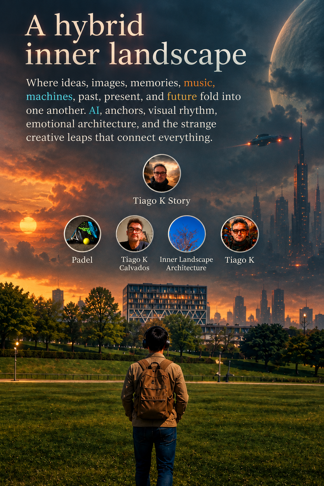

A hybrid inner landscape
Where real life, memory and imagination start to overlap. Machines, music, AI, travel, work, people and play become part of the same evolving world — connected by the strange leaps between Tiago and Tiago K.
Where ideas, images, memories, music, machines, past, present, and future fold into one another. AI, anchors, visual rhythm, emotional architecture, and the strange creative leaps that connect everything.